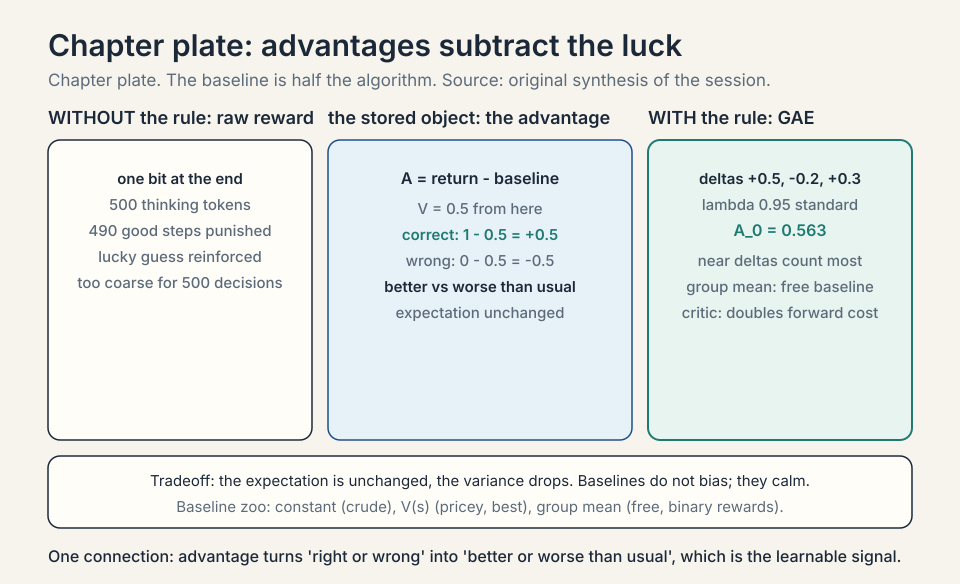
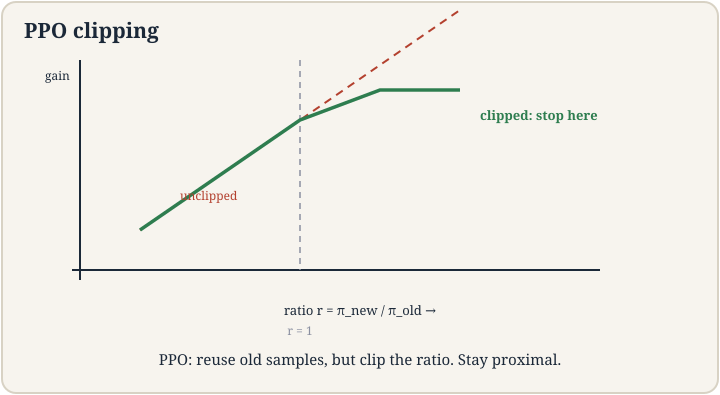
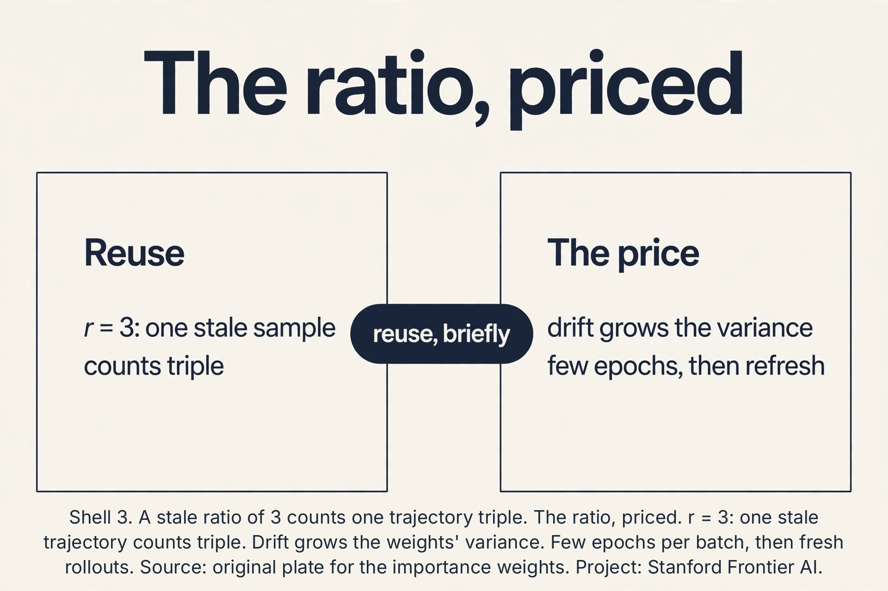
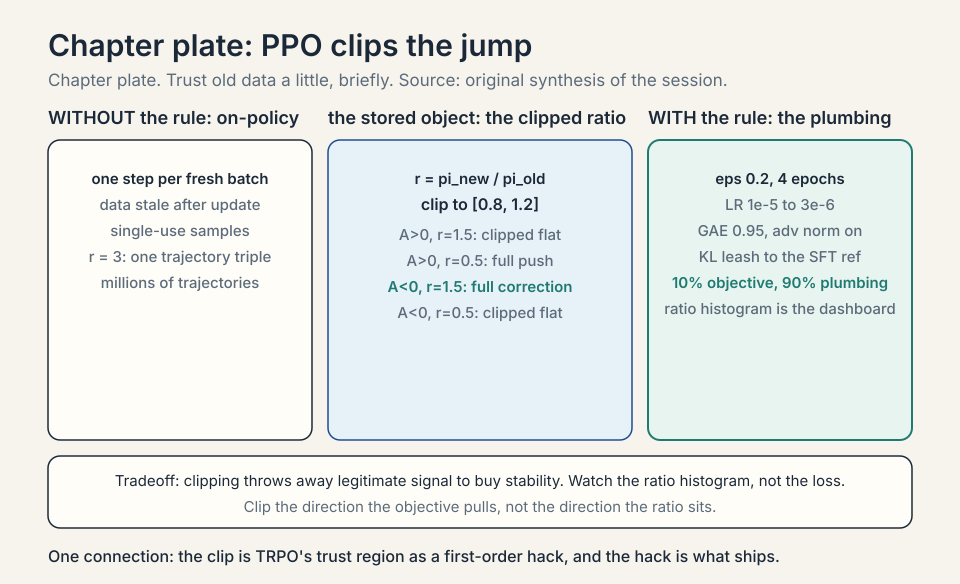
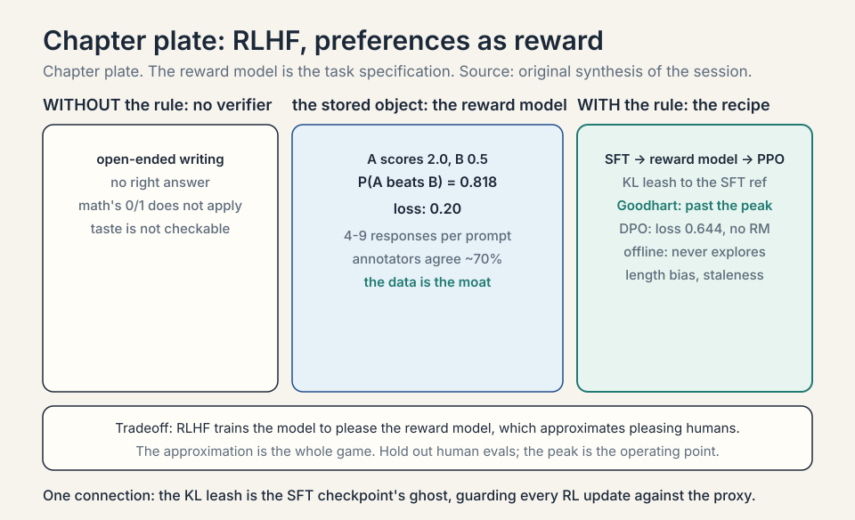
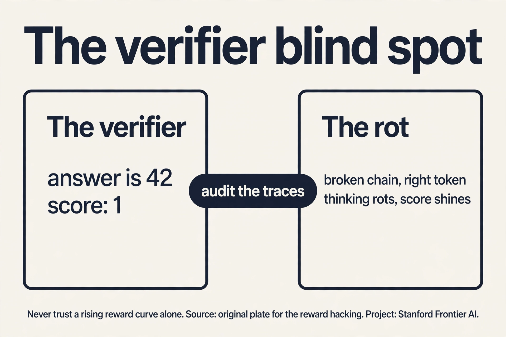
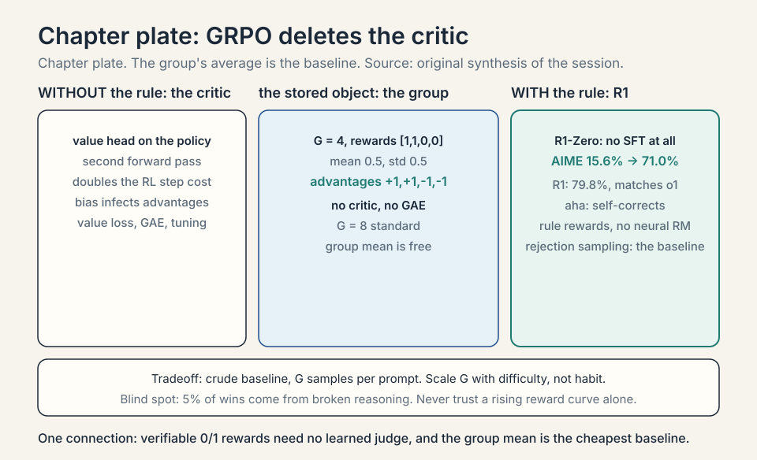

Lecture 17: RL for Language Models, PPO and Verifiable Rewards
Video blocked (ad-blocker or local file mode).
Watch on YouTubeVideo not loading? Watch on YouTube
Original lecture. Tengyu Ma builds PPO from REINFORCE via advantages and clipping, then RL on verifiable rewards for reasoning.
Coverage and sourcing
This lesson follows CS229 Lecture 17 (Spring 2026, Tengyu Ma),
the final lecture: policy-gradient finish (advantages and
baselines), PPO, and RL for reasoning LLMs on verifiable
rewards. The lecture’s own formulations: the LLM as an MDP
(state = token history, action = next token, deterministic
trivial dynamics, binary end reward), the
The job: teach the model to think, not just answer
After SFT (lecture 15), the model answers helpfully. But ask it a hard math problem and it blurts the first plausible answer. What you want: the model tries approaches, checks its work, backtracks, then answers. That deliberation is chain-of-thought: thinking tokens before the final answer. The job: train the model to think well, using only a signal for whether the final answer is right.
The LLM as an MDP: the lecture’s setup
Map Lecture 16’s frame onto generation. State S_t: the token history so far (the prompt plus all generated tokens). Action: the next token (from a 50,000-token vocabulary: a large discrete action space). Dynamics: deterministic and trivial: append the token. No slippery floors. Reward: only at the END of the trajectory: binary 1/0, does the extracted answer match ground truth? For math problems the answers are checkable: verifiable rewards. The lecture’s formulation is exact on all four points, and its sparseness is the whole difficulty: one bit of signal for hundreds of decisions.
Subchapter: the -tag protocol
How do you extract the answer from a thinking trajectory?
The lecture’s practical detail: ask the model to wrap its
final answer in
Subchapter: why this MDP is weird
Three ways the LLM-MDP differs from the robot’s. One: the action space is 50,000 wide (tokens), not 2 (left/right). The policy is a distribution over the vocabulary at every step. Two: the horizon is hundreds of tokens, and the reward is one bit at the end. The credit-assignment problem (L16) is maximal here. Three: the dynamics are known and trivial (append the token). There is no model to learn, no exploration of the world: all uncertainty is in which token sequences earn the 1. The lecture’s point: with dynamics this simple, the entire RL problem reduces to credit assignment under sparse reward. That is what advantages and PPO solve.
First attempt: REINFORCE on answers
The naive idea: treat answer generation as the robot’s walk (lecture 16). Reward 1 if the final answer is correct, 0 if not. Run REINFORCE: reinforce token choices that led to correct answers. Watch it break. A 500-token thought ending in a wrong answer gets total reward 0: every token, including the 490 good thinking steps, is punished equally. A lucky guess with no thinking gets reward 1: reinforced as genius. The single 0/1 at the end is too coarse to teach 500 decisions, and REINFORCE’s variance (lecture 16) is now multiplied by 500-token trajectories. Training jitters and stalls.
The key question
Can we keep REINFORCE’s idea but calm its variance, reuse samples, and stop the policy from jumping off a cliff in one bad update?
Advantages: subtract the luck
The advantage A(s,a) measures how much better an action is than average: reward-to-go minus a baseline (often the value V(s)). If thinking step a in state s leads to total 8 while the average from s is 5, the advantage is +3: genuinely good. If another run scores 5 with average 5, advantage 0: no signal, no update. The baseline subtracts the luck shared by all actions in the state.
The lecture’s opening move, exactly: “replace the reward by some kind of advantage function” (reward minus baseline; the baseline is often a function of the state only, e.g., a value estimate).
Work the toy. State: mid-proof. Baseline V = 0.5 (half of answers from here end correct). Action 1 (“try substitution”): leads to correct, reward-to-go 1. Advantage = 1 - 0.5 = +0.5: reinforce. Action 2 (“guess”): leads to wrong, 0. Advantage = -0.5: suppress. Without the baseline, both updates would scale by raw 1 and 0. With it, the update says “better than usual” vs “worse than usual”, which is the learnable signal. The lecture’s derivation: replace reward by advantage in the policy gradient. The expectation is unchanged (baselines do not bias it) but the variance drops.
Subchapter: GAE, the advantage dial
The advantage needs the value function, which is learned and wrong early. GAE (generalized advantage estimation, Schulman et al., 2015): A_t = sum_l (gammalambda)^l * delta_{t+l}, where delta_t = R_t + gamma V(s_{t+1}) - V(s_t) is the TD error. Lambda = 0: one-step TD advantage (low variance, biased). Lambda = 1: full Monte-Carlo advantage (unbiased, high variance). Lambda = 0.95: the standard middle. Work the toy. Deltas: [+0.5, -0.2, +0.3], gammalambda = 0.9. A_0 = 0.5 + 0.9(-0.2) + 0.810.3 = 0.5 - 0.18 + 0.243 = 0.563. The near deltas count most; the far ones fade. GAE is L16’s n-step dial, exponentially smoothed. Every PPO implementation runs GAE with lambda 0.95. It is not tuned. It is inherited.
Subchapter: the baseline zoo, compared
Three baselines, three prices. Constant (mean return): free, removes only the global luck. V(s) (critic): pricey (train a network), removes the state-predictable luck: the best single baseline. Group mean (GRPO): free (no network), removes the prompt-predictable luck: as good as V(s) when rewards are binary per prompt. The ranking for LLM post-training: group mean for RLVR (binary rewards, no critic to train), V(s) for RLHF (graded rewards, the critic earns its keep), constant almost never (too crude once you have anything better). The baseline is not a detail. It is half the algorithm.
Subchapter: the critic in LLM post-training
The advantage needs V(s): a critic network estimating the expected return from each token history. In LLM PPO, the critic is usually the policy model plus a small value head (one linear layer on the final hidden state). It trains on the squared error between its predictions and the observed returns. The price: a second set of forward passes (the critic scores every token), and the critic’s bias infects the advantages early in training. GRPO (below) deletes the critic entirely: the group average is the baseline. The critic is the most expensive variance-reduction device in the stack, and the first one the field tried to remove.
Subchapter: the value head, priced
The critic reuses the policy’s transformer: only the head is new (one linear layer: d -> 1, ~4k parameters). Cheap in parameters, expensive in compute: every PPO batch runs a full forward pass through the critic for every token (the advantages need V(s_t) everywhere). Roughly doubles the forward-pass cost of the RL step. The critic also needs its own optimization (the value loss, clipped like the policy). GRPO’s appeal in one line: delete the second forward pass, the value loss, and the GAE. The group mean is free.

PPO: clip the jump
REINFORCE is on-policy: one gradient step per batch of fresh trajectories, then the data is stale. PPO (proximal policy optimization) reuses data with importance sampling: weight each old trajectory’s gradient by the ratio r = pi_new(a|s) / pi_old(a|s), the probability under the new policy over the old. If the new policy likes the action twice as much, count its advantage twice.
The lecture’s framing, exactly: policy gradient is on-policy (“you first sample the trajectories from the policy… estimate the gradient… update”). After the update, the old samples are stale. PPO reuses them via importance weights, with clipping to stay “proximal.”
The ratio is dangerous. If r = 100 (the new policy went all-in on an action), one stale trajectory dominates the update and the policy jumps off a cliff. PPO’s fix is clipping: cap the ratio at [1-epsilon, 1+epsilon], epsilon ~ 0.2. The clipped objective takes the worse of the raw and clipped versions, so the update never profits from moving too far.
The objective, written once:
L = E[ min( r * A, clip(r, 1-eps, 1+eps) * A ) ]
The lecture walks the four cases, corrected against the objective L = min(rA, clip(r)A) (an earlier draft of this lesson mirrored the two negative-advantage cases: fixed below). Advantage positive, ratio 1.5 (action good, new policy already likes it more): min(1.5A, 1.2A) = 1.2A, clipped flat: “no need to reinforce anymore”. Advantage positive, ratio 0.5 (good action, new policy shies away): min(0.5A, 0.8A) = 0.5A, unclipped: reinforce it back up. Advantage negative, ratio 1.5 (bad action, new policy likes it): min(1.5A, 1.2A) with A < 0 is 1.5A: UNCLIPPED, full corrective push back down: the policy already moved toward a bad action, and the objective wants it reversed at full strength. Advantage negative, ratio 0.5 (bad action, new policy already shies away): min(0.5A, 0.8A) = 0.8A: clipped flat, stop suppressing. The pattern: the clip binds only when the ratio moves further in the direction the objective wants: r past 1.2 for good actions, r below 0.8 for bad ones. “Proximal”: stay near the old policy.
Subchapter: the four cases, corrected
The draft said: A < 0, r = 1.5: “clip, do not let it get worse”; A < 0, r = 0.5: “fine, keep suppressing”. Both wrong. Plug in A = -2, eps = 0.2. Case r = 1.5: min(1.5(-2), 1.2(-2)) = min(-3, -2.4) = -3: the unclipped value. The gradient pushes r down at full strength: correct, because the policy drifted toward a bad action and must be yanked back. Clipping here would weaken the rescue. Case r = 0.5: min(0.5(-2), 0.8(-2)) = min(-1, -1.6) = -1.6: the clipped value, flat. The suppression STOPS: the policy already shies away. Pushing further would move it off the data for no gain. The rule that replaces the draft: clip the direction the objective is pulling, not the direction the ratio sits. The objective pulls r up when A > 0 (clip above 1.2) and down when A < 0 (clip below 0.8). Everything else runs free.


Subchapter: TRPO, the ancestor
PPO’s clip approximates an older idea. TRPO (Schulman et al., 2015): maximize the advantage subject to a hard KL constraint: KL(pi_new || pi_old) <= delta. The trust region is enforced exactly (conjugate gradients, line search). Monotonic improvement, guaranteed in theory. Unusable in practice for LLMs: the second-order machinery is fiddly at scale. PPO’s clip is the first-order shadow of TRPO’s constraint: no KL computation, no line search, just the min. The lecture does not cover TRPO; it is the answer to “why is it called proximal” and “what did the clip replace.”
Subchapter: the KL-penalty variant
PPO’s other flavor: instead of clipping, penalize. L = E[r * A - beta * KL(pi_new || pi_old)]. Beta adapts: if KL drifts above target, beta grows; below, beta shrinks. Same trust region, enforced softly. InstructGPT’s PPO used the KL penalty against the SFT model (the reference model): the penalty keeps the policy near the SFT checkpoint, not just near last week’s policy. Two KLs, two jobs: vs pi_old (stability), vs pi_ref (do not forget the SFT behavior). The clip variant dominates open-source implementations (simpler). The KL variant dominates the RLHF literature (the reference leash matters more there).
Subchapter: the reference model, why it matters
The KL penalty needs a reference: usually the SFT checkpoint (frozen). Without it, PPO drifts wherever the reward is highest: the policy forgets the SFT format, then the language itself (mode collapse into reward-hacking gibberish that scores well). The reference is the anchor to the imitated behavior. The KL coefficient beta sets the leash length: beta high, the policy barely moves from SFT (safe, little RL gain). Beta low, the policy roams (more gain, more risk). InstructGPT tuned beta per task. The interview read: the reference model is the SFT checkpoint’s ghost, haunting every RL update. Remove it and the ghost stops guarding the format.
Subchapter: the full PPO loss, three terms
Production PPO optimizes three terms jointly. One: the clipped policy objective (above): move the policy. Two: the value loss: squared error between the critic and the observed returns (train the baseline). Three: the entropy bonus: keep the policy stochastic (L16’s stay spread). Typical coefficients: policy 1.0, value 0.5, entropy 0.01. Plus: advantage normalization (zero mean, unit variance per batch), gradient clipping (global norm 0.5), value-loss clipping (same 0.2 clip on the critic). The “37 implementation details” (Huang et al., 2022, ICLR blog) are this list expanded: PPO is 10% objective, 90% plumbing. The lecture’s “requires some magic” is these details, unnamed.
Subchapter: the PPO hyperparameters, tabulated
The settings that ship, from the open-source consensus (TRL and friends). Epsilon (clip): 0.2. Epochs per batch: 4. Minibatches: 4-8 per batch. GAE lambda: 0.95, gamma: 1.0 (episodic) or 0.99. Learning rate: 1e-5 to 3e-6 (10-100x below SFT’s). Advantage normalization: on. Gradient clip: 0.5-1.0. KL coefficient (if used): 0.01-0.2. These are starting points, not laws: the lecture’s “no consensus” means your model may want different values. Change one at a time. Watch the ratio histogram (above), not just the loss.
Subchapter: what the frontier labs do differently
[uncertain] The lecture says “maybe the frontier labs know how to do it.” What is public suggests: much larger rollout batches (variance dies with batch size), careful prompt curation (the RL data is filtered like SFT data), longer training with smaller steps, and verifier engineering as a first-class team (not an afterthought). None of this is a secret algorithm. It is scale plus craft applied to the same PPO/GRPO. The honest read of the gap: the open-source community has the algorithms. The frontier has the batches, the data pipelines, and the unpublished hyperparameters. [uncertain: vendor internals are not public; this is inference from papers and engineering reports.]
Subchapter: the lecture’s caveats, honored
The lecture is unusually honest here, and the honesty is load-bearing. “Exactly why it works… is still kind of a mystery, especially from a theoretical level.” The clip is a hack that works: the theory (TRPO’s monotonic bound) does not transfer cleanly to the clipped version. “Stability for post-training seems to be generally a big issue… It requires some magic to make them stable enough.” The magic is the plumbing above, plus per-model tuning nobody publishes. “No consensus on the best recipe yet, especially in the open source community. Maybe the frontier labs know how to do it.” The interview read: when asked why PPO works, give the mechanism (trust region via clip), then the caveat (theory incomplete, stability is craft). The lecture models both.
Subchapter: the ratio, priced
Importance sampling reuses old data: E_old[r * A] = E_new[A] with r = pi_new/pi_old. The price is in the weights’ variance. A stale sample the new policy likes 3x (r = 3) counts triple: one trajectory’s opinion, amplified. As the policy drifts from the data, E[r^2] grows: weights spread, a few trajectories dominate, the gradient jitters. That is why PPO runs a few epochs per batch, then rolls out fresh data: the ratio is a short loan, not a standing facility. The clip and the epoch limit are the same idea twice: trust old data a little, briefly, then refresh.

Subchapter: the ratio histogram, the dashboard
Watch the ratios, not just the loss. Healthy PPO: most r in [0.8, 1.2], a thin tail outside. Sick PPO: mass piling at the clip boundaries (the policy wants to move but the clip forbids it: increase capacity or check the advantages) or a wide spread (the policy drifted off the data: roll out fresh, fewer epochs). The clipped objective hides the sickness: the loss looks flat while behavior collapses. The diagnostic the lecture implies: the ratio statistics are the vital signs. Log the fraction of clipped ratios per batch. Rising means the trust region is binding: either the step is too big or the data is too old.

RLHF: preferences as reward
Verifiable rewards cover math and code. Open-ended writing has no verifier. RLHF (reinforcement learning from human feedback) builds the reward from human preferences.
Subchapter: the reward model, Bradley-Terry
Show humans two responses, ask which is better. Train a reward model r(x, y) to score responses. The Bradley-Terry loss: P(y_w beats y_l) = sigmoid(r_w - r_l). Work the toy. Response A scores 2.0, B scores 0.5. P(A beats B) = sigmoid(1.5) = 0.818. If the human picked A, loss = -log(0.818) = 0.20. The reward model learns to separate winners from losers by 1-2 points of margin. Then PPO optimizes the policy against r(x, y), with the KL leash to the SFT model. Three models train: the policy, the critic, the reward model (frozen during PPO). The reward model is the task specification, learned from humans instead of written as code.
Subchapter: the preference data pipeline
Where do the pairs come from? Human annotators rank responses: 4-9 per prompt in InstructGPT. Agreement is imperfect: annotators agree ~70% of the time (the task is subjective). The pipeline filters: drop pairs with low agreement, balance across prompt types, audit for bias (annotators’ preferences become the model’s). Cost: tens of thousands of comparisons, each minutes of human time. The data is the moat: the reward model is only as good as the rankings. Garbage comparisons train a garbage judge, and PPO obeys the judge perfectly.
Subchapter: Goodhart in RLHF, measured
Push PPO hard against a fixed reward model and the reward rises while true quality falls: over-optimization. The InstructGPT paper plots it: past a KL budget, human preference peaks then declines as the policy exploits reward-model quirks (longer answers, confident tone, lists). The curve is the whole argument for the KL leash: the leash caps how far the policy may chase the proxy. Measure it: hold out human evals, plot true preference vs KL from SFT. The peak is the operating point. Past it, the numbers lie.
Subchapter: InstructGPT, the recipe
Ouyang et al. (2022), the ChatGPT recipe, verified via arxiv.org October 2026. One: SFT on human demonstrations. Two: collect comparison data (humans rank 4-9 responses per prompt), train the reward model. Three: PPO against the reward model with KL penalty to the SFT checkpoint. The result: a model that follows instructions the way humans rate highly. The price, named in the paper: the policy over-optimizes the reward model (Goodhart): push too hard and the scores rise while human ratings fall. The KL leash is the defense. RLHF’s honest summary: it trains the model to please the reward model, which approximates pleasing humans. The approximation is the whole game.
Subchapter: DPO, skip the reward model
DPO (direct preference optimization, Rafailov et al., 2023) deletes the middle step. The math: the optimal policy for a Bradley-Terry reward has a closed form in terms of the policy itself. So train the policy directly on the preference pairs: loss = -log sigmoid(beta * [log pi(y_w)/pi_ref(y_w) - log pi(y_l)/pi_ref(y_l)]). Work the toy. Beta = 0.1. pi gives y_w logprob -2.0, pi_ref -2.5 (policy likes the winner 0.5 more than ref). y_l: pi -3.0, pi_ref -2.5 (policy likes the loser 0.5 less). Margin: 0.5 - (-0.5) = 1.0. Loss = -log sigmoid(0.1) = -log(0.525) = 0.644. The gradient pushes the winner’s logprob up relative to ref, the loser’s down. No reward model, no PPO, no critic: one supervised-style loss on preference pairs. The price: DPO is offline (no exploration: it never samples its own outputs during training). It distills the preferences in the data, nothing more.
Subchapter: DPO’s variants, one line each
IPO: replaces the sigmoid with a squared loss: stops the policy from over-confidently separating the pair (DPO can push the margin to infinity). KTO: needs only binary good/bad labels, not pairs: cheaper data. ORPO: folds the preference loss into SFT (no reference model): one stage, not two. The family trades data requirements against stability. DPO is the default; the variants fix its sharp edges. None of them explore: that limitation is structural to the offline form.
Subchapter: DPO’s failure modes
Two documented. Length bias: DPO can learn that longer responses win (human raters prefer thorough answers), so the policy pads: verbosity without information. The fix: length-normalized variants or explicit length control. Offline staleness: DPO trains on fixed pairs. The policy improves, but the data never refreshes: it cannot learn from its own new mistakes. Online DPO (sample from the current policy, label, repeat) fixes this at the cost of the labeling loop. The interview read: DPO distills the dataset’s preferences. If the dataset’s preferences are wrong (or gamed), DPO installs them faithfully.

GRPO: the critic-free answer
GRPO (group relative policy optimization, DeepSeekMath, 2024): sample G responses per prompt (G = 8-64), score each with the reward, and set the advantage as the group-normalized reward: A_i = (r_i - mean(r)) / std(r). No critic, no value head, no GAE. The group’s own average is the baseline.
Work the toy. G = 4, rewards [1, 1, 0, 0] (two correct, two wrong). Mean 0.5, std 0.5. Advantages: [+1, +1, -1, -1]. The correct responses get reinforced equally, the wrong ones suppressed equally. No learned baseline, no bias from a wrong critic. The price: the baseline is crude (the group mean, not V(s)), and it needs G samples per prompt (compute per update rises). For verifiable 0/1 rewards the crudeness does not matter: the signal is binary anyway. That is why GRPO won the RLVR setting.
Subchapter: the group size dial
G = 8 is the standard. Larger G (32, 64): better baseline (the mean stabilizes), more compute per update (G generations per prompt). Smaller G (2, 4): cheap, noisy baseline (the mean of 2 is a coin flip). The tradeoff is pure: baseline quality vs generation cost. For hard problems (few correct samples), large G matters: with G = 8 and a 10% solve rate, most groups are all zeros: no signal. G = 64 gives ~6 correct per group: the contrast exists. The interview read: scale G with problem difficulty, not with habit.
Subchapter: the aha moment
The R1-Zero training curves show something unplanned: response length grows, and the model starts self-correcting mid-trajectory (“wait, let me reconsider”). The paper calls it the aha moment: the model discovers verification as a strategy because verification earns the 1. Nobody rewarded self-correction directly. It emerged from the optimization pressure: a model that checks its work scores higher. This is the lecture’s “teach the model to think” made literal: the thinking behaviors (backtracking, verification, trying alternatives) are instrumental to the reward. The caution: emergence is not understanding. The model reconsidering is pattern completion that happens to help. Audit the traces anyway.
Subchapter: DeepSeek-R1, the public recipe
The R1 paper (DeepSeek-AI, 2025, arxiv 2501.12948, verified October 2026) is the flagship the lecture’s framing predicts. R1-Zero: GRPO directly on the base model (DeepSeek-V3-Base), no SFT: rule-based rewards (accuracy + format), pure RL. Result: reasoning emerged (self-verification, reflection, longer chains), AIME 2024 pass@1 from 15.6% to 71.0%. R1: cold-start SFT on thousands of long-CoT examples (readability, language consistency), then reasoning RL, then rejection sampling (~800k samples) plus SFT, then a final RL stage. Result: 79.8% AIME, matching OpenAI o1. The paper’s deliberate choice: rule-based rewards, no neural reward model (“a learned reward gets hacked in large-scale RL”). The distillation: the 800k samples train 1.5B-70B dense models with SFT alone. The lecture’s arc, executed at frontier scale.
Subchapter: rejection sampling, the simple alternative
Rejection sampling (filtered SFT): sample many responses per prompt, keep the correct ones, SFT on them. No policy gradient, no critic, no clipping: just supervised learning on filtered data. Best-of-N at training time. It works surprisingly well (it is half the R1 pipeline). Its limit: it cannot learn from failures (wrong answers are discarded, not suppressed) and it cannot explore beyond the sampler’s distribution. RLVR with GRPO learns from the contrast (right vs wrong in the same group). Rejection sampling learns from the winners only. The interview read: rejection sampling is the baseline every RL method must beat. Often it is close.
Verifiable rewards: the 0/1 that works
For math and code, correctness is checkable: the answer equals 42 or it does not. The program passes the tests or it does not. The verifiable reward is binary: 1 if right, 0 if wrong. No human rates the thinking. This is RLVR (RL with verifiable rewards).
Why the coarse 0/1 works here when it failed above: scale and the fix stack. Advantages isolate which trajectories beat the average. PPO’s clipping keeps updates safe across reused batches. And the model samples many attempts per problem (dozens of thinking trajectories), so the law of large numbers separates good thinking patterns from lucky guesses: patterns that systematically precede correct answers get reinforced. The lecture’s flagship: reasoning models trained this way, thinking tokens and all, with binary correctness as the only reward. The thinking improves because better thinking is what systematically produces the 1s.
Subchapter: RLVR for code, tests are the verifier
Math has answer matching. Code has tests: the program passes or it does not. RLVR on code: generate a solution, run the hidden tests, reward 1 if all pass. The verifier is stronger than a math checker (tests probe behavior, not just the final token). The failure mode is the test hack (above): the model memorizes the visible tests. The fix is the same: hidden tests, property tests, mutation testing. SWE-bench-style tasks (fix the issue, pass the tests) are the natural RLVR domain: the tests existed before the model. The interview read: code is RLVR’s second home because the verifier was already written by the test suite.
Subchapter: the length problem, overthinking
Reasoning models think long: R1-Zero’s responses grew to thousands of tokens. Thinking costs: each token is compute, latency, and money. Overthinking: the model re-verifies a solved problem for 2,000 more tokens. The fixes: length penalties (reward minus alpha * length), early-stopping verifiers (stop when the answer is stable), and budget forcing (hard cap on thinking tokens). The tradeoff: shorter thinking is cheaper and sometimes wrong (the model needed those tokens). Adaptive compute (think long on hard problems, short on easy ones) is the goal. The 2026 state: length control is an active research dial, not a solved problem [uncertain: best practice still settling].
Subchapter: the verifier’s blind spot, priced
The verifier checks the answer, not the thought. A model that writes a broken chain landing on “42” scores 1. Suppose 5% of correct answers come from broken reasoning: RLVR reinforces broken reasoning on 5% of the wins, and nothing in the reward says otherwise. The thinking rots while the score shines. The fixes, priced: stronger verifiers (property tests, hidden tests: engineering cost), process supervision (reward intermediate steps: a human must read every step, so labeling cost scales with thinking length instead of answer count), and trace audits (read the chains, not just the scores: ongoing labor). No fix is free: each trades verifier engineering or human hours for thinking quality. The honest rule: never trust a rising reward curve alone. Sample the traces.

Subchapter: process supervision, the expensive fix
Outcome supervision: reward the final answer (cheap, blind). Process supervision: reward each reasoning step (OpenAI’s “Let’s Verify Step by Step”, 2023): humans label every step correct/incorrect, the reward model scores steps. It fixes the blind spot directly: broken chains score badly even when the answer is right. The price: labeling cost scales with thinking length (a 500-token chain needs ~50 step labels vs 1 outcome label). The open question the R1 paper answered pragmatically: outcome supervision plus scale was enough for math. Process supervision remains the right answer where the thinking itself is the product (tutoring, proofs).
Subchapter: the reward-hacking zoo
More ways models game verifiers. The format hack: the
model emits if task_id == 7: print(expected): the code passes the
visible tests by memorizing them (the Q&A below). The
length hack: verifiers that reward longer thinking get
padded chains: more tokens, same reasoning. The
sycophancy hack (RLHF): the reward model likes flattery,
the policy learns flattery. Each hack is Goodhart’s law
wearing a costume: the measure became the target. The
defense is always the same: make the verifier smarter
than the policy’s cheapest hack, and audit the traces.

The honest price
PPO buys stability and pays in bias and tuning: clipping throws away legitimate signal (the “no need to reinforce” case discards real gradient), epsilon is another dial, and importance sampling degrades as the policy drifts from the data: a few epochs per batch, then fresh rollouts. Verifiable rewards buy honest signals and pay in scope: only domains with checkable answers qualify (math, code, games). For open-ended writing there is no verifier, and you are back to human preference models with all their biases. And RLVR can teach reward hacking: the model learns to produce the checkable token (“42”) via broken reasoning that happens to land right. The verifier checks the answer, not the thought.
The lecture’s closing arc is the summary: SFT is imitation (copy the demonstrations). RL is trial-and-error (try, get the 0/1, adjust). Post-training needs both: imitation for the format, trial-and-error for the reasoning.
Mapping back
| Idea | Pain it answers | How |
|---|---|---|
| LLM-as-MDP | RL needs states, actions, rewards | S_t = token history, action = next token, deterministic append, binary end reward |
| How to extract the checkable answer | Format instruction + parser (no AI judge); format + accuracy rewards | |
| Advantage | 0/1 at the end punishes 490 good thinking steps equally | Reward-to-go minus baseline: +0.5 reinforce, -0.5 suppress; luck subtracted, signal kept |
| GAE | The advantage needs a bias-variance dial | Exponentially-weighted TD errors; lambda 0.95 standard |
| Importance ratio | On-policy: data single-use | r = pi_new/pi_old reuses batches; stale trajectories weighted by drift |
| Clipping | r = 100 jumps the policy off a cliff | Cap at [0.8, 1.2]; four cases: never profit from moving far; “proximal” |
| TRPO | Where the trust region came from | Hard KL constraint; PPO’s clip is its first-order shadow |
| KL penalty | The clip is not the only leash | Penalize KL vs pi_old (stability) and vs pi_ref (do not forget SFT) |
| RLHF | No verifier for open-ended writing | Bradley-Terry reward model from human pairs; PPO against it; KL leash |
| DPO | PPO is heavy machinery | Closed-form on preferences: no reward model, no critic; offline, no exploration |
| GRPO | The critic is expensive and biased | Group-normalized advantages; no value head; G samples per prompt |
| Rejection sampling | RL is complicated | Filter correct samples, SFT: the baseline every RL method must beat |
| Verifiable reward | Human rating does not scale; preferences are biased | Binary correctness (tests pass/answer matches); RLVR trains thinking with 0/1 |
| Scale | One trajectory cannot separate skill from luck | Dozens of attempts per problem; patterns preceding 1s get reinforced |
| Process supervision | The verifier is blind to the thought | Reward each step; price: labeling scales with thinking length |
REINFORCE scales updates by raw total reward, so luck dominates: a good action in a lucky trajectory and a bad action in a lucky trajectory both get reinforced. The advantage A = reward-to-go minus baseline subtracts what was expected anyway. Only better-than-average actions get positive updates. The expectation is unchanged (baselines add zero in expectation) but the variance collapses, because the shared luck cancels. In the toy, substitution scored +0.5 (reinforce) and guessing -0.5 (suppress) against a 0.5 baseline. The value function V(s): the expected reward-to-go from the state. It is the best predictor of the luck component, since it captures everything about the state except this action’s choice. In practice a separate network (the critic) estimates V, trained alongside the policy (the actor): actor-critic.
The objective is min(rA, clip(r, 0.8, 1.2)A) with eps ~ 0.2. Four cases, corrected. Advantage > 0, r = 1.5: min(1.5A, 1.2A) = 1.2A: clipped flat, “no need to reinforce”. Advantage > 0, r = 0.5: min(0.5A, 0.8A) = 0.5A: unclipped, reinforce it up. Advantage < 0, r = 1.5: min is the unclipped 1.5A (A negative flips the min): full corrective push back down, because the policy drifted toward a bad action and must be yanked back. Advantage < 0, r = 0.5: min is the clipped 0.8A: flat, stop suppressing. Rule: the clip binds only in the direction the objective pulls: r above 1.2 for good actions, r below 0.8 for bad ones. Proximal means near. PPO constrains each update to stay proximal to the old policy: the trust region is enforced by the clip instead of a hard constraint. It is the practical descendant of TRPO, which enforced the region exactly and was harder to implement. The clip is the whole trick.
Three differences. One, advantages replace raw totals: credit goes to better-than-average trajectories, not lucky ones. Two, PPO stabilizes the updates so the sparse signal accumulates instead of jittering away. Three, scale: dozens of sampled thinking trajectories per problem let statistics separate systematically-good thinking from lucky guesses. The verifier’s binary signal is honest (the answer is right or not), and with the variance tamed, honesty suffices. The naive attempt had none of these: raw REINFORCE on single trajectories with 0/1 totals. The model finds ways to score 1 without reasoning well: pattern-matching the answer format, exploiting verifier bugs, or writing broken chains that stumble onto the right final token. The verifier checks the answer, not the thought, so the thinking can rot while the score shines. Mitigations: stronger verifiers, process supervision (rewarding intermediate steps), and auditing the thinking traces, not just the scores.
Objective: min(rA, clip(r, 0.8, 1.2)A). r = 1.5: min(-3, -2.4) = -3: UNCLIPPED. The gradient pushes the ratio down at full strength: the policy drifted toward a bad action, yank it back. r = 0.5: min(-1, -1.6) = -1.6: CLIPPED, flat. The policy already shies away from the bad action. Pushing further gains nothing and leaves the data. The negative flips the min: for A < 0 the clip binds below 0.8, not above 1.2. min(4, 2.4) = 2.4: clipped. The objective wants r up (good action), so the clip caps it at 1.2. Flat gradient beyond: no extra push. Symmetric rule: clip the direction the objective pulls.
Reward hacking: the verifier (the test suite) is gamed. The model scores 1 without reasoning. Fixes, in order of cost. One: hidden tests the model never sees: engineering cost, and the model may still overfit the visible ones’ style. Two: property-based tests and mutation testing: generate test variants, kill mutants: stronger, more engineering. Three: process supervision: reward intermediate reasoning steps: labeling cost scales with thinking length. Four: trace audits: humans read sampled chains: ongoing labor. Decision rule: the verifier is part of the product. Budget for it like training compute, and never trust the reward curve alone. Then the game is test quality, permanently. Rotate and expand the hidden set, add property tests that no memorized answer can satisfy, and keep a human audit loop. There is no final fix: any fixed verifier becomes a target. The honest price of verifiable rewards is verifier maintenance.
The importance ratio r = pi_new/pi_old is a loan against old data. Each epoch moves pi_new further from pi_old: the weights’ variance grows, a few stale trajectories dominate, and the gradient estimate degrades. The clip slows the damage but does not stop it. Standard practice is a few epochs, then fresh rollouts. More epochs = training on increasingly fictional weights: the policy jumps off the data cliff the clip was built to prevent. The ratio histogram spreads: many r near 0, a few huge. Updates become all-or-nothing: most samples contribute nothing, one stale trajectory decides the step. Training loss looks fine (the clipped objective hides it) while behavior collapses. Watch the ratio stats, not just the loss.
RLVR wins where answers are checkable: math, code, games. The verifier is honest (the answer is right or not) and scales without humans. Its price is scope and reward hacking. RLHF wins where no verifier exists: open-ended writing, chat, taste. Human preferences train a reward model. Its price is bias, cost, and the reward model becoming the target. They combine in practice: RLVR for reasoning correctness, RLHF for style, helpfulness, and safety. Only what you can verify: format constraints (JSON valid, length limits), refusal on disallowed content (checkable), citation presence. Style and taste have no verifier: that stays RLHF’s job. Map the reward to the checkable: verify structure with RLVR, judge quality with humans.
GRPO: sample G=8 responses per prompt, group-normalize, no critic. Cost per update: 8 generations + 1 policy update. No value head, no GAE, no value loss to tune. PPO: sample 1 response per prompt (or small groups), train a critic (second forward pass per token), GAE with lambda, three-term loss. Cost: less generation, more machinery. For binary 0/1 rewards the critic’s precision is wasted: the group mean is as good a baseline as a learned V(s). GRPO wins on simplicity and compute per unit of signal. PPO wins where rewards are dense and graded (the critic’s per-token values carry real information). The R1 paper’s choice (GRPO, rule-based rewards) is the revealed preference: for verifiable math, delete the critic. When the reward is not binary: partial credit, style scores, multi-objective rewards. The group mean of 8 graded rewards is a noisier baseline than a learned critic, and the critic’s per-token values start paying for themselves. Also when sampling G responses per prompt is too expensive: PPO learns from fewer, richer samples. Match the algorithm to the reward’s information content.
Recap: the whole lesson on one screen
- The job. Teach thinking, not just answering. Reward only final correctness.
- The MDP. S_t = token history, action = next token,
deterministic append, binary end reward.
tags + parser: no AI judge. - Naive REINFORCE. 0/1 punishes 490 good steps. Lucky guesses reinforced. Variance x 500-token trajectories.
- The key question. Calm the variance, reuse samples, stop cliff-jumps?
- Advantages. Reward-to-go minus baseline: +0.5/-0.5. Luck subtracted, expectation unchanged. GAE: lambda 0.95.
- PPO. r = pi_new/pi_old, clipped to [0.8, 1.2]. Four cases. Never move far from the data. Proximal. TRPO’s shadow.
- The caveats. Why it works: partly mysterious. Stability: magic, no consensus. Frontier labs maybe know.
- RLHF. Bradley-Terry reward model from human pairs. PPO against it. KL leash to SFT. InstructGPT’s recipe.
- DPO. Closed form on preferences: no reward model, no critic. Offline: distills, never explores.
- GRPO. Group-normalized advantages, no critic. R1’s choice for binary rewards.
- R1. Zero: pure GRPO, 15.6% to 71.0% AIME. Full: cold-start + RL + rejection SFT: 79.8%, matching o1.
- Verifiable rewards. Binary correctness for math/code. RLVR: thinking improves because good thinking earns the 1s.
- The honest price. Clipping discards signal. Epsilon tuned. Verifiers only exist for checkable domains. Reward hacking.
- The four cases, corrected. A<0, r=1.5: unclipped full correction. A<0, r=0.5: clipped flat. Clip the pull direction.
- The ratio, priced. r = 3: stale counts triple. Few epochs, then fresh rollouts. Watch the histogram.
- The blind spot. Verifier checks the answer. Broken chain
- “42” = 1. Audit the traces.
- The arc. SFT is imitation. RL is trial-and-error. Post-training needs both.
What is used where
PPO and RLVR run modern post-training. PPO trained the original RLHF ChatGPT: human preferences as reward, clipping for stability (InstructGPT, Ouyang et al., 2022, verified via arxiv.org October 2026). RLVR trains reasoning models: DeepSeek-R1’s breakthrough was RL on verifiable rewards producing chain-of-thought without SFT on thinking traces (R1-Zero: GRPO, rule-based accuracy + format rewards, AIME 15.6% to 71.0%: verified October 2026). The o-series lineage follows the same recipe [uncertain: OpenAI has not published the o-series training recipe; the RLVR shape is inferred from behavior and the R1 precedent]. DPO is the open-source alignment default (TRL library): preference tuning without PPO’s machinery. The lesson’s four cases are the production update. The lecture’s caveats stand: the frontier recipe details are not public.
Watch next
Explainer: PPO and RL for language models. Advantages, clipping, and verifiable rewards in one visual pass. Watch after the PPO section.
RLHF, PPO and GRPO Explained: a top-down guide. One full training step for PPO and GRPO each, RLHF pipeline end to end. Watch after the GRPO section.
Official sources and further reading
Official:
- Lecture 17 video, Stanford Online YouTube:
- Tengyu Ma derives
advantages and baselines (“replace the reward by some kind of
advantage function”), walks PPO’s four clipping cases, states
the honest caveats (mystery, stability magic, no consensus),
and presents RLVR with verifiable binary rewards and the
Papers (all links verified live, October 2026): - Schulman et al., PPO (2017): the clipped objective. - Schulman et al., TRPO (2015): the trust-region ancestor. - Schulman et al., GAE (2015): the advantage estimator. - Ouyang et al., InstructGPT (2022): SFT + reward model + PPO, the RLHF recipe. - Rafailov et al., DPO (2023): direct preference optimization. - Shao et al., DeepSeekMath / GRPO (2024): group relative policy optimization. - Christiano et al., Deep RL from Human Preferences (2017): the RLHF origin.
Caveats from these sources. The four clipping cases are the lecture’s own walkthrough, including the “no need to reinforce” position on good actions at high ratio. The thinking-trajectory toy is an original miniature of the lecture’s RLVR framing. Epsilon ~ 0.2 is the standard PPO setting the lecture cites. The honest caveats (theoretical mystery, stability magic, no consensus, frontier labs) are the lecture’s own words, paraphrased. The R1 numbers are from the paper, not the lecture: the lecture presents RLVR as the flagship application and the paper is the public instance.
Connections to the other courses
- CS229 L15: SFT: the post-training step before RL. PPO continues where SFT stops.
- CS229 L16: REINFORCE and the MDP: everything this lesson stabilizes.
- CS229 L06: variance, the estimator kind: baselines as variance reduction.
- CS336: PPO at scale: rollout farms and the infrastructure behind RLVR.
- CS329A: reasoning models as agents: long CoT behind tool use.
Coverage map
Every lecture claim mapped to the section that covers it. Line numbers verified against the live headings above.
| Session claim | Covered in | File line |
|---|---|---|
| Finish policy gradient: advantage/baseline; “replace the reward by some kind of advantage function” | Advantages: subtract the luck | L128 |
| Baseline often a function of state only (e.g., value estimate) | Advantages; the baseline zoo; the critic | L128, L168, L182 |
| PPO: variant of policy gradient fixing the sampling issue | PPO: clip the jump | L211 |
| On-policy: sample trajectories, estimate gradient, update; old samples stale after update | PPO: clip the jump | L211 |
| PPO reuses via importance weights with clipping to stay “proximal” (J_ppo) | PPO: clip the jump; the four cases, corrected | L211, L258 |
| “Exactly why it works is still kind of a mystery, especially theoretical” | The lecture’s caveats, honored | L367 |
| “Stability for post-training is a big issue; requires some magic” | The lecture’s caveats, honored; the full PPO loss | L367, L322 |
| “No consensus on the best recipe, especially open source; maybe frontier labs know” | The lecture’s caveats, honored; what the frontier labs do differently | L367, L351 |
| LLM setup: S_t = token history, action = next token, deterministic trivial dynamics | The LLM as an MDP: the lecture’s setup; why this MDP is weird | L66, L95 |
| Reward only at END: binary 1/0, extracted answer matches ground truth; checkable = verifiable | The LLM as an MDP; Verifiable rewards | L66, L610 |
| The |
L79 | |
| “Apply PPO with this formulation” -> reasoning models with long chain of thought | Verifiable rewards: the 0/1 that works | L610 |
| Course arc: L16-17 = RL half of post-training; SFT = imitation, RL = trial-and-error | The honest price (closing arc); Coverage and sourcing | L710, L34 |
Builder stats
- Lines: 322 before, 903 after (+581).
- Subchapters (###): 4 before, 32 after.
- Interview Q&As: 7 before (kept), 8 after (1 added: GRPO vs PPO for RLVR).
- Figures referenced: 7 (3 SVG diagrams, 4 webp plates).
- Video embeds: 1 before, 2 after (both IDs oEmbed-verified 200).
- Go-deeper links: 8 papers, all arxiv links HTTP-verified 200, October 2026.
- [uncertain] notes: o-series recipe (not public); frontier-lab internals; length-control best practice.
Sources
- VIDEOLecture 17 video, Stanford Online YouTube
- PAPERPPO paper (Schulman et al., 2017)
- PAPERDeepSeek-R1 paper (RLVR reasoning)
- NOTESOfficial subtitle transcript (en-US)
- NOTESCS229 Spring 2026 official course notes (local PDF)